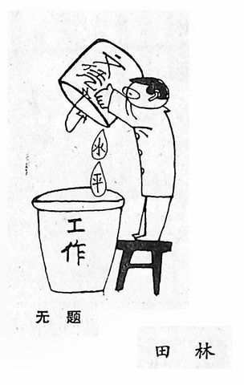
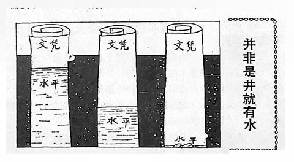
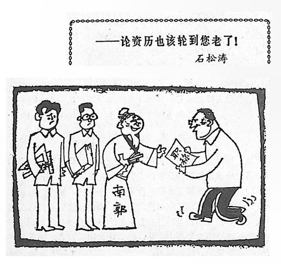
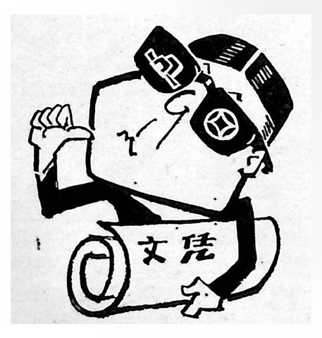
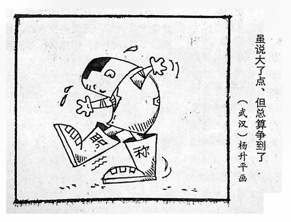
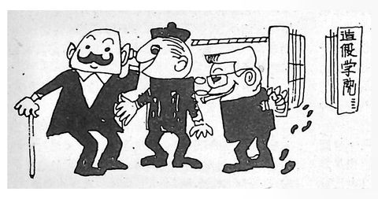

Diplomas and credentials 10
-
 无题 · Untitled (“Sun Wukong: I want a diploma”)
无题 · Untitled (“Sun Wukong: I want a diploma”)
Zhu Nianci 朱念慈. Renshi (Personnel), 1985 no. 2 (whole no. 2), p. 47. -
 有文凭的厨师 · The Chef with a Diploma
有文凭的厨师 · The Chef with a Diploma
Drawn by Sun Yiyu 孙以煜; adapted by Sun Yanfeng 孙岩峰. Renshi (Personnel), 1986 no. 2 (whole no. 5), inside back cover. -

无题 · Untitled
Tian Lin 田林. Renshi (Personnel), 1986 no. 4 (whole no. 7), p. 47. -

并非是井就有水 · Not Every Well Has Water
Unattributed. Renshi (Personnel), 1986 no. 8 (whole no. 11), p. 47. -

——论资历也该轮到您老了！ · "By Seniority, It Really Should Be Your Turn!"
Shi Songtao 石松涛. Renshi (Personnel), 1986 no. 8 (whole no. 11), p. 48. -
 乾隆选才（续） · Qianlong Chooses Talent (continued)
乾隆选才（续） · Qianlong Chooses Talent (continued)
Adapted and drawn by Wu Guoliang 吴国良. Renshi (Personnel), 1987 no. 6 (whole no. 21), inside back cover. -

为某君画像（插图） · Portrait of a Certain Gentleman (illustration)
Huang Yunzhong 黄允中. Renshi (Personnel), 1987 no. 7 (whole no. 22), p. 48. -
 一“捞”永逸 · Grab It Once, Settled for Good
一“捞”永逸 · Grab It Once, Settled for Good
Duan Lianming 段连明. Renshi (Personnel), 1989 no. 9 (whole no. 48), p. 39. -

虽说大了点，但总算争到了 · A Bit Big, But At Least I Got Them
Drawn by Yang Shengping 杨升平. Renshi (Personnel), 1990 no. 1 (whole no. 52), p. 37. -

造假学院招生简章（题图） · Admissions Prospectus of the College of Forgery (header drawing)
Unattributed. Renshi (Personnel), 1990 no. 11 (whole no. 62), p. 40.